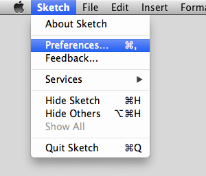
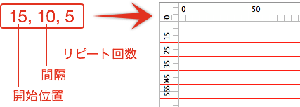

この記事はSketchの古いバージョンを元に書いた内容です。最新バージョンでは、動作が異なる場合があります。
以前の記事（ちょっと別の世界も見てみませんか？ベクターベースのグラフィックツール Sketchを紹介してみるよ。）で、Sketch.appはスクリプトによる拡張ができると書きました。しかしながらJSTalkという、新しく作るには若干学習コストのかかる言語で書く必要があり、なかなか手を出しにくい機能なのも事実です。
そんな中、Fireworksのコマンド集Orange Commandsの中の人が、その一部をSketch.appプラグインに移植されています（しかも結構前から）。今回はこのプラグイン集を紹介してみたいと思います。
Sketchの基本。というSketch（Sketch 3）の基本操作にフォーカスした電子書籍をリリースしました。詳しくはこちらの「Sketchの基本。」のページをご覧ください。
Sketch 2.2.4で動作を確認しているため、バージョンによっては動いたり動かなかったりすると思いますので、予めご了承ください。 ## プラグインを使うには まずは、プラグインのダウンロードと解凍しておきましょう。 **プラグインのGitHubリポジトリ** [sketchplugins/plugin-directory][3] 続いて、Sketchの環境設定でプラグインの有効化が必要ですので、［Sketch］メニューから、［Preferences］を選択します。
［Preferences］の［General］タブにある「Enable Scripting」をクリックして有効にすると、メニューに［Plugins］が表示されます。
続けて、［Plugins］メニューから［Custom Script…］を選択します。
JSTalkを記述するウィンドウが出てくるので、下にある歯車マークをクリックし、「Open Plugins Folder」を選択します。
FinderでPluginsフォルダが開きますので、その中に解凍してできたフォルダを入れると準備完了です。Gitが使える方は、このフォルダへcloneしてもOKです。
続けてプラグインについて解説していきます。
Alignグループ
Space Horizontal
選択しているオブジェクト中で一番下にあるレイヤーを基準に、オブジェクトを入力した数値分の間隔を空けて水平方向に再配置します。オブジェクトを回転している場合は、回転していない状態と見なして再配置されます（角度を0に戻すと入力した値分の間隔が空いている）。垂直方向は変化しません。

Space Vertical
選択しているオブジェクト中で一番下にあるレイヤーを基準に、オブジェクトを入力した数値分の間隔を空けて垂直方向に再配置します。オブジェクトを回転している場合は、回転していない状態と見なして再配置されます（角度を0に戻すと入力した値分の間隔が空いている）。水平方向は変化しません。
Alpha グループ
Alpha N%
オブジェクトのアルファを設定します。「Alpha…」は値を入力できます。
Effects グループ
Offset
入力した値分、幅と高さをオフセットしたオブジェクトを複製します（角丸の大きさや線幅は変更されません）。マイナスの値も入力できますが、オフセットした結果、幅や高さが0以下になる場合、同じ大きさのオブジェクトが複製されます。
Repeat Horizontal
選択しているオブジェクトを、入力した値の数だけ水平方向に複製します。オブジェクト同士の間隔は10pxになるようです。
Repeat Vertical
選択しているオブジェクトを、入力した値の数だけ垂直方向に複製します。オブジェクト同士の間隔は10pxになるようです。
Export グループ
アートボードやスライスを書き出すプラグインです。が、私の環境ではうまく実行できず機能しませんでした。GitHub でも ISSUE が上がってるようですね。以下、プラグイン名から読み取った機能です。
All Artboards as PDF
全てのアートボードを PDF 形式で書き出します。
All Artboards as PNG
全てのアートボードを PNG 形式で書き出します。
All Artboards as SVG
全てのアートボードを SVG 形式で書き出します。
All Slice as PDF
全てのスライスを PDF 形式で書き出します。
All Slice as PNG in ZIP
全てのスライスを PNG 形式で書き出し ZIP 化します。
All Slice as PNG in…
全てのスライスを指定した場所に PNG 形式で書き出します。
All Slice as PNG
全てのスライスを PNG 形式で書き出します。
All Slice as SVG
全てのスライスを SVG 形式で書き出します。
Save and Export Slices
ドキュメントを保存して、スライスを書き出します。
Guides グループ
ガイドライン関連のプラグインです。こちらの一部も GitHub に ISSUE が上がっている通り、動作しないようです。
Add Guides Manually to Artboard
任意の座標にガイドラインを作成します。値は、X, Y で入力し、垂直方向だけ作成する場合は、X 座標のみ（e.g. 10）、水平方向だけ作成する場合は、カンマ + Y 座標（e.g. ,10）と入力します。
Around Selection
選択しているオブジェクトを囲うように、ガイドラインを作成します。
Clear All Guides in Current Artboard
現在編集しているアートボードのガイドラインをすべてクリアします。
Clear All Guides in Current Page
現在編集しているページのガイドラインをすべてクリアします。
Crear Horizontal Guides in Current Page
現在編集しているページの水平ガイドラインをクリアします。いまいちキチンと動きませんでした。
Clear Vertical Guides in Current Page
現在編集しているページの垂直ガイドラインをクリアします。いまいちキチンと動きませんでした。
Repeat Guides horizontally on Artboard
水平ガイドラインをリピートして作成します。値は、開始位置（X座標）, 間隔, リピート回数の順番で入力します。
Repeat Guides vertically on Artboard
垂直ガイドラインをリピートして作成します。値は、開始位置（Y座標）, 間隔, リピート回数の順番で入力します。

Pages グループ
Add New Page
新しいページを追加します。
Duplicate Current Page
現在編集しているページを複製します。
Remove Current Page
現在編集しているページを削除します。
Playground グループ
Kitchen Sink
ソースを見る限り、テスト用のプラグインを実行し、ログを出力するためのもののようです。（ただしログを見ると9行目あたりでDenyになってるので、役になっていないというか…）開発をしないのであれば、外しておいた方がいいですね。
Position グループ
Fix Position
Positionの小数点以下の数値を四捨五入します。サイズも四捨五入されますが、すべてのアンカーポイントではなく、サイズ算出に使う外周のアンカーポイントのみが四捨五入されます。
Set Position
選択しているオブジェクトを、任意の X, Y 座標に移動します。四則演算可能。片方の値のみを入力した場合、オブジェクトが異次元に飛ぶので注意です。
Swap Position
オブジェクトが2つ選択されている場合、各オブジェクトの左上座標を起点にオブジェクトを入れ替えます。
Properties グループ
Make Pill
選択しているオブジェクトから、角丸が100%の矩形を作成します。

Rotation…
選択しているオブジェクトを、入力した値で回転します。複数選択している場合は、個別に回転します。グループ化されている場合、グループの角度が入力した値に設定されます。
Set Radius…
角丸を、入力した値で設定します。ただし、Radius が有効なオブジェクトに限ります。
Size グループ
Equalize Height
選択しているオブジェクトの高さを、最も値の大きいオブジェクトに揃えます。高さが変更されるオブジェクトは、下方向に延長されます。
Equalize Width
選択しているオブジェクトの幅を、最も値の大きいオブジェクトに揃えます。幅が変更されるオブジェクトは、右方向に延長されます。

Height
選択しているオブジェクトの高さを、入力した値に設定します。複数選択している場合は、個別に高さが設定され、グループ化されている場合、グループの高さが入力した値に設定されます。
Scale to 4-3
幅を基準に、4 : 3の大きさにスケーリングします。
Scale to 16-9
幅を基準に、16 : 9の大きさにスケーリングします。
Set Size
選択しているオブジェクトを、入力した値（ width, height ）に設定します。四則演算可能。複数選択している場合は、個別に幅と高さが設定され、グループ化されている場合、グループの幅と高さが入力した値に設定されます。片方の値のみを入力した場合、オブジェクトが異次元に飛ぶので注意です。
Width
選択しているオブジェクトの幅を、入力した値に設定します。複数選択している場合は、個別に幅が設定され、グループ化されている場合、グループの幅が入力した値に設定されます。
基本的なプラグインばかりですが、ちょっと足りない部分を補ってくれるものばかりです。自分でフォルダを作っていれれば、オリジナルのグループも作れますので、必要なプラグインだけインストールすることもできます。
またプラグイン自体を利用するのもさることながら、中身を覗いて改造したり新しく作ったりできそうです。